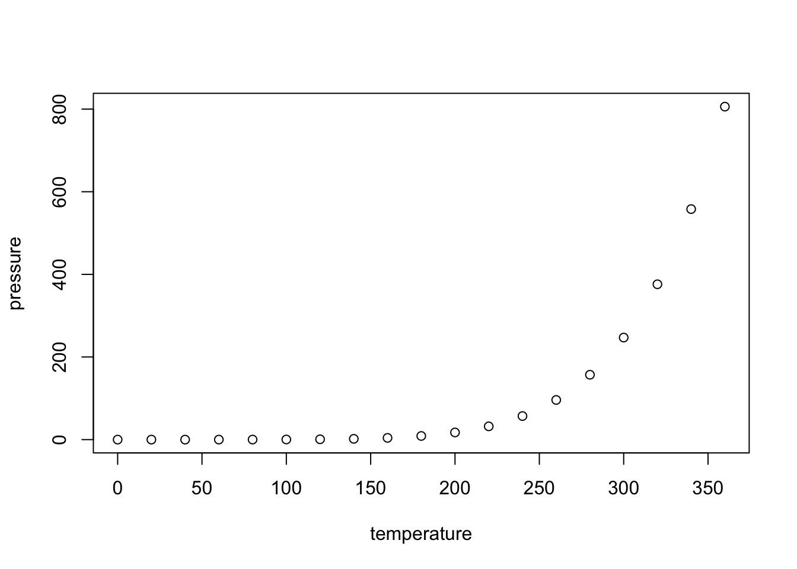

# Load libraries
library("gplots")##
## Attaching package: 'gplots'## The following object is masked from 'package:stats':
##
## lowesslibrary("ggplot2")
library("RColorBrewer")
library("scales")
# Load the data (biological and technical factors)
Best_set_bio_tech_var <- read.delim("~/Reg_Evo_Primates/ashlar-trial/data/Best_set_bio_tech_var.txt")
# Load the data (expression counts data)
gene_counts_with_gc_correction <- read.delim("~/Reg_Evo_Primates/ashlar-trial/data/gene_counts_with_gc_correction.txt")In the previous analysis, we found that
summary(cars)## speed dist
## Min. : 4.0 Min. : 2.00
## 1st Qu.:12.0 1st Qu.: 26.00
## Median :15.0 Median : 36.00
## Mean :15.4 Mean : 42.98
## 3rd Qu.:19.0 3rd Qu.: 56.00
## Max. :25.0 Max. :120.00You can also embed plots, for example:

Note that the echo = FALSE parameter was added to the code chunk to prevent printing of the R code that generated the plot.